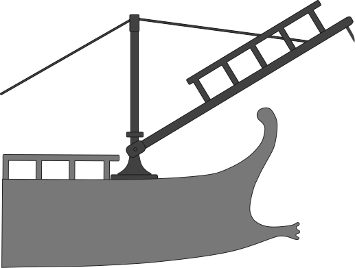
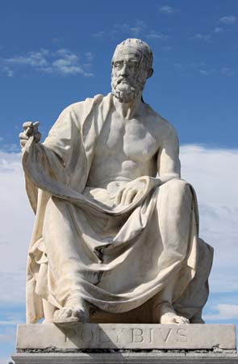

The First Punic War (264 to 241 BC) was the first of three wars fought between Ancient Carthage and the Roman Republic. For more than 20 years, the two powers struggled for supremacy, primarily on the Mediterranean island of Sicily and its surrounding waters, and also in North Africa. The war signalled the beginning of a strategic transformation in the western Mediterranean.[1] Carthage began the war as the great sea-power of the western Mediterranean, while Rome had but a small fleet of fighting ships. Over the course of the war, Rome built up a powerful navy, developed new naval tactics, and strategically used their navy, army, and local political alliances on Sicily in order to achieve a victory that expelled the Carthaginians from Sicily.[2] The First Punic War ended with a treaty between Rome and Carthage, but years of bloodshed were to follow in the Second and Third Punic Wars before the strategic issue of power in the western Mediterranean was resolved in favour of Rome, and in the total destruction of Carthage.
Timeline
Year Location Event 264 BCE Messana The Mamertines at Messana on Sicily call for Carthaginian and then Roman help in defence against Syracuse 262 BCE Agrigento Rome besieges and sacks Agrigento on Sicily in one of the first actions of the First Punic War. 260 BCE Italy Rome builds a fleet of 120 ships in just 60 days. 258 BCE Sulcis Rome wins a naval battle against Carthage at Sulcis. 256 BCE Tunis Rome wins a land battle south of Tunis. 256 BCE Ecnomus Roman naval victory against Carthage off Ecnomus. 255–253 BCE Pachynus and Palinurus Roman fleets are wrecked by storms off Pachynus and Palinurus. 249 BCE Drepanum Carthage defeats Rome in a naval battle. 244 BCE Eryx Hamilcar Barca captures Eryx on Sicily. 241 BCE Aegates Islands Roman naval victory off the Aegates Islands leads to victory over Carthage, ending the First Punic War.
Illustration of the 'Corvus,' a boarding device invented by the Romans at the beginning of the First Punic War. Corvus (meaning "crow" or "raven" in Latin) was a Roman military boarding device used in naval warfare during the First Punic War against Carthage.

Primary Source
World History by Greek historian, Polybius.
